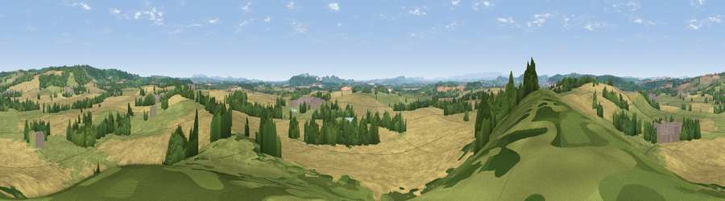

Viewpoint near Felton
#17406 in England · top 47% of its area beats it · near Felton · path 78 mWhere it is
The exact computed spot (SO 56075 48825). Click the marker for map links.
Public access: the nearest public right of way is about 78 m away — the final stretch may cross private land. Computed from Natural England's CRoW access layer and OpenStreetMap rights of way — not the legal definitive map. Always verify locally.
The view, rendered

A 360° render of this exact spot computed from the terrain model, tree cover and land cover — summer colours, afternoon light, calibrated against photographs of famous viewpoints. Real trees, hedges and buildings will differ in detail.
The panorama
Grey silhouette: terrain skyline in each direction (720 bearings, Earth curvature and refraction included). Dashed green: skyline with trees (+15 m) and buildings (+8 m) as obstacles. Blue strip: how far the ground is visible on each bearing.
Where the view opens
Wedge length = distance to the farthest visible ground on that bearing (vegetation-aware). Rings at 10, 25 and 50 km.
What fills the view
55% cropland · 30% grassland · 14% woodland · 1% built-up
Angular shares of the visible panorama (visual magnitude), not map area. Landscape diversity 0.44 (0–1 Shannon).
Key numbers
More beautiful places nearby
The staircase of upgrades: each row has a higher view potential than everything closer. Driving times are estimates from straight-line distance, calibrated against real road routing — check an actual route before setting out.
| Place | Direction | Drive | Score |
|---|---|---|---|
| Ashgrove Hill | WNW · 2 km | ~6 min | 56.0 |
| Viewpoint near Little Cowarne | NE · 3 km | ~8 min | 69.4 |
| Viewpoint near Little Cowarne | NE · 4 km | ~9 min | 69.6 |
| Viewpoint near Bodenham | WNW · 5 km | ~11 min | 71.4 |
| Viewpoint near Pencombe | NNE · 6 km | ~12 min | 72.8 |
| Viewpoint near Canon Pyon | W · 10 km | ~19 min | 74.6 |
| Viewpoint near Westhope | WNW · 11 km | ~21 min | 77.0 |
| Seagar Hill | SSE · 11 km | ~21 min | 82.1 |
52.13597, -2.64318 · source: screening · position refined by local search. Computed location — check access rights before visiting.